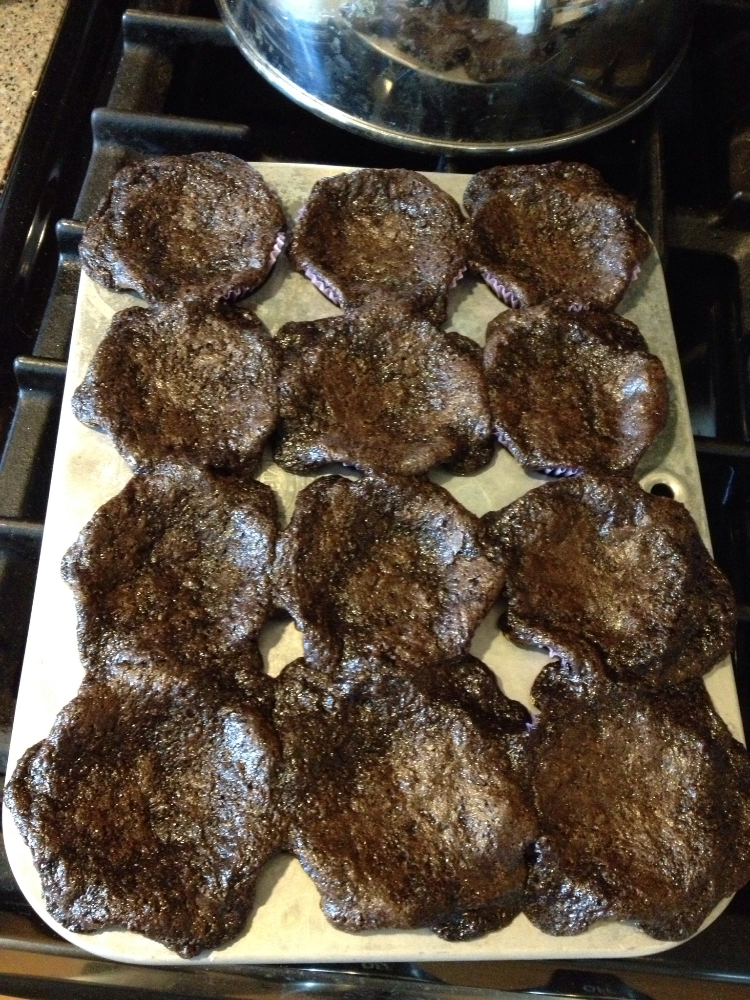

Welcome to our digital storefront!
We're excited to stuff frosting down your throats!
We also just want to be the best cupcake resource in the PDX market. We're super passionate about something that skyrockets your blood sugar and ultimately might give you diabetes (Type 2).
Do it Yourself
So maybe before you go and spend a gang of money (like $4/cupcake) here, you'd like to try a batch yourself. Here are some ingredients for our favorite recipe and how to assemble them!
BEST Gluten-Free Red Velvet Cupcakes
INGREDIENTS
- .75 oz (about 3 Tbs) cocoa powder
- 9.5 oz ( 1¼ c minus 1 Tbs) white sugar
- ½ tsp salt
- ½ tsp xanthan gum
- ½ tsp baking soda
- 8.25 oz (1½ c) Gluten-Free Flour Blend (I have only tested with my GF Cookie/cake blendand have gotten great results)
- ½ c milk
- ½ c. vegetable oil
- 2 eggs
- 1 tsp vanilla
- 1 tsp vinegar
- ½ - 1 tsp red food coloring
- 1 recipe Easy Cream Cheese Frosting
INSTRUCTIONS
- Preheat oven to 350F. Line cupcake pan with paper liners.
- Mix together all the dry ingredients in a mixing bowl. In a large liquid measuring cup mix together all the wet ingredients. Add the wet ingredients to the dry ingredients and mix until combined.
- Fill the muffin pan cups about ¾ way full (about 1 Tbs of batter for mini muffins) and bake until the cupcake springs back when you touch it, about 18-22 minutes. (30-35 minutes for a layer cake.)
- Cool before frosting with Easy Cream Cheese Frosting.
How'd it turn out?
Fart sticks... did your batch look like this?

Well that's why we're here! Send your custom order to April & Brad.
Those cupcakes above will look like the below pic when we ship them to you ;-P